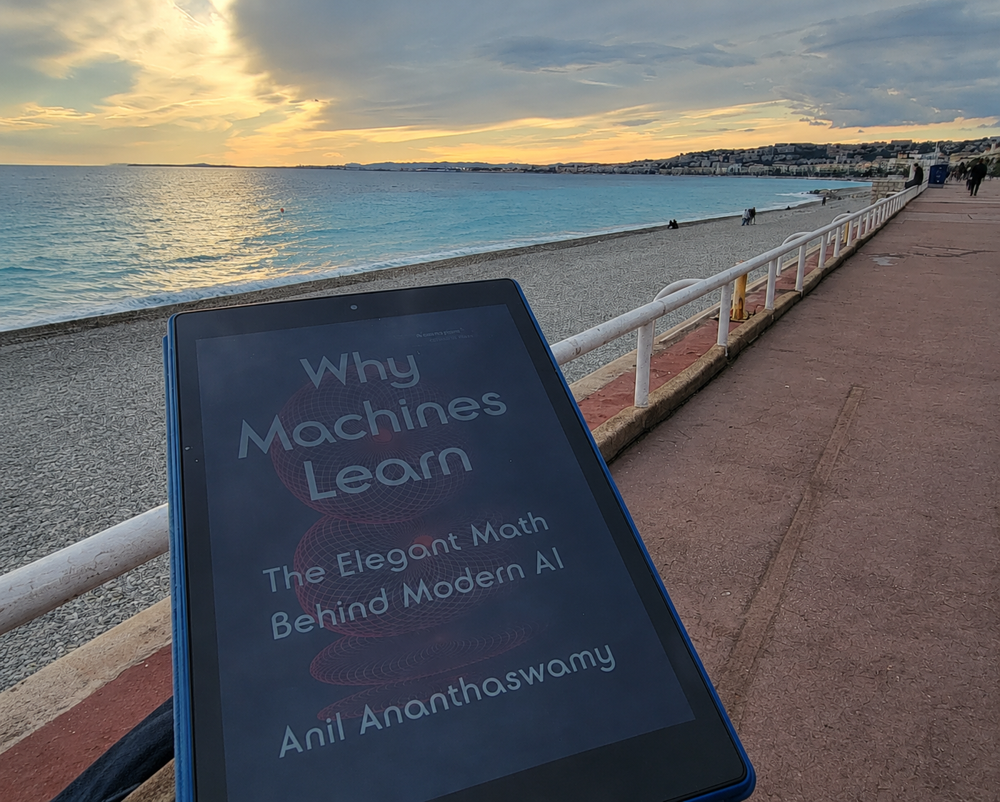

In November 2025 I hit a real crisis — personal and professional. I've had crises before, but this one was different: structural. Twenty-plus years in mental health, and it felt like none of it held. My knowledge felt useless, inaccurate, beside the point. I didn't have an answer for what came next.
I went to Nice, France, alone — to read, walk the city, and listen to French TV. I'd brought one book: Why Machines Learn: The Elegant Math Behind Modern AI by Anil Ananthaswamy. In a chapter called "Birds of a Feather: Nearest Neighbors and the Curse of Dimensionality," he describes a data point defined by several traits at once — features that overlap in ways that are hard to hold together clearly, so you keep adding dimensions — creating a sort of 5D penguin. I read that and thought: that's me. I'm a 5D penguin.
That wasn't quite where it started, though. Earlier that summer, I'd picked up Change Is the Only Constant by Ben Orlin from a little outdoor library — for the pictures, and because I loved the name; it spoke to me like a sentence I'd been looking for. And because I'd loved math as a kid before our paths split, in a way I always quietly regretted. Reading it, something clicked: wait, this is real. Math is a real thing, out in the world. And then I just kept going — algebra, matrices, eigenvectors, transformers, one video at a time.
By December I'd laid it all out — algebra and calculus, neurobiology, LLMs and NLP, psychology — and asked myself: what is this, all together? The answer was data science.
I found an online certificate to test two things: whether I actually still liked this, and whether my brain could still do it, or whether it was too late. It seems to have worked. I keep noticing the patterns beneath all of it — how these pieces of me, that felt separate for so long, are actually the same shape.
Some days that makes me feel lonely, even a little crazy. Other days it feels like proof I can do this differently than I assumed I had to. I'm currently a student in the MS in Data Science program at the University of Pittsburgh — my third degree, in my ongoing attempt to understand the world and the human brain. Hopefully third time's the charm.
I'm happy to see all sides of my interest coming together right now — and there's so much more still coming.